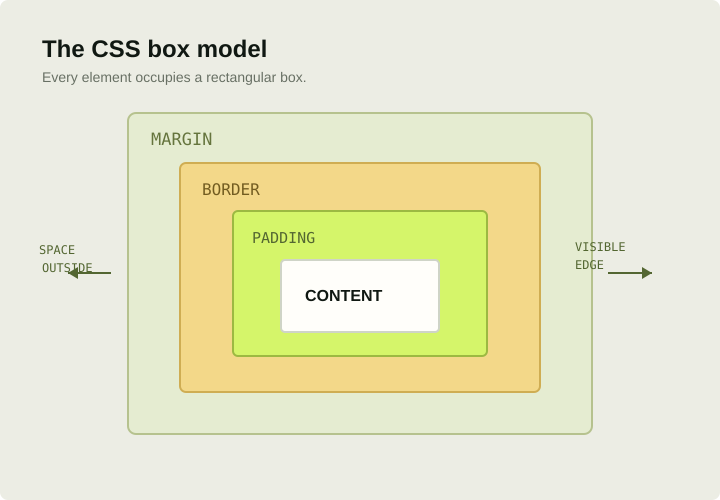

Selectors & the cascade
Target elements with selectors and understand why one rule wins over another. Keep specificity predictable and organize styles so they are easy to maintain.
.article-title {
color: #101812;
font-size: 2rem;
}THE WEB FOUNDATIONS SERIES Follow the learning path
02 / THE WEB FOUNDATIONS
LAYOUT & EXPRESSION
CSS (Cascading Style Sheets) describes how HTML should look and adapt. Use it to build layouts, choose type and color, create visual rhythm, and make the experience work across different screen sizes.
Explore the CSS topics
CSS is both a system and a craft. Reusable rules make your design consistent; responsive layouts let that design adapt to the person using it.
THE SECOND LAYER / 002WHAT YOU'LL LEARN
Learn how CSS chooses elements, calculates space, and arranges content. Then bring those ideas together in a layout that feels good on any screen.
Target elements with selectors and understand why one rule wins over another. Keep specificity predictable and organize styles so they are easy to maintain.
.article-title {
color: #101812;
font-size: 2rem;
}Understand content, padding, borders, and margins. Use border-box sizing to make dimensions easier to reason about as a layout grows.
* {
box-sizing: border-box;
}
.card { padding: 1.5rem; }Create hierarchy with readable type sizes, comfortable line-height, and purposeful contrast. Use design tokens for values shared across components.
:root {
--ink: #101812;
--space: 1.5rem;
}Use Flexbox to arrange items along one axis. It works especially well for navigation bars, aligned controls, and evenly spaced content.
.toolbar {
display: flex;
align-items: center;
gap: 1rem;
}Use CSS Grid to arrange content in rows and columns. Combine flexible tracks with minimum widths to build layouts that respond naturally.
.cards {
display: grid;
grid-template-columns:
repeat(3, 1fr);
gap: 1rem;
}Build a fluid baseline, then add breakpoints when the content needs them. Check your design at narrow widths, not just device presets.
.layout {
width: min(100% - 2rem,
70rem);
margin-inline: auto;
}PUT IT INTO PRACTICE
Start with a simple content card. Give it a clear hierarchy, then create a multi-column layout for wide screens and a comfortable single-column version for a phone.